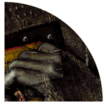

Now, the very bedrock of the new frontier is suspect. "Security is a subjective process," says Jeff Treuhaft, security product manager at Netscape Communications. "We have understood all along that there is no such thing as 100 percent Internet security. There never will be." Marty Levine, the editor of the Digital Technology Report and an industry analyst, concurs: "With any security scheme, it's a matter of when, not if, security will be broken. The break-in only reinforces the perception that there is no total security on the Internet."
Good Story, Bad Press
If many people already knew that Internet security is an illusion at best, why did Wagner and Goldbergs'
findings generate the uproar that they did? Part of the answer lies in the financial pages. Last August,
Netscape made its initial public stock offering. The stock was expected to open at $28 a share; it
immediately skyrocketed to almost three times that much, before settling down to around a still astonishing
$58 a share. For a few dizzying minutes, Netscape -- a company that had an income of $16 million the
previous fiscal year -- was valued at $2.7 billion.
Thus, the Netscape browser security flap in September came as a wake-up call to many of the companies who saw Netscape's stock success as a green light to set up shop in cyberspace. Netscape's Treuhaft feels that while the media coverage of the flaws made many people think about Internet security for the first time, it shouldn't have come as a shock to anyone. "I'm not sure who it has been a bombshell for. We were surprised at the sensationalism of the story,"he says. "I think the press especially has taken a keen interest in the story and taken some editorial liberties in how they portray the problems."
Treuhaft is especially upset with the way that the second security story played in the press. "That second security break was not really new. What (Wagner and Goldberg) described was the ability within a network to change a program that a user was downloading, while it was being downloaded. They weren't changing the file on disk somewhere, they were changing it as it crossed the network." The problem, Treuhaft says, is the media's misconception that this was a new, unknown bug a pair of hackers had somehow discovered. "Anyone with an interest in the Internet could have easily found this information in literally dozens, if not hundreds, of places. It's been generally known for quite some time. All that (Wagner and Goldberg) were trying to do was raise awareness."
Wagner and Goldberg posted their findings to the Web because they said that they hoped it would be for the public's good to draw attention to Internet security. Treuhaft agrees. "Folks like (Wagner and Goldberg) and many before them have taken the Netscape program and put it through its paces to help us make it a better product. In that sense, their efforts are definitely in the interest of Netscape and the interest of all the users out there who enjoy using the product."
The break in should actually increase confidence in Netscape's security, Treuhaft maintains, because "consumers realize some of these very bright people have spent many hours attacking the program, and the flaws they found have all been fixed."
Netscape's position is that the browser security break, though important, was not a major setback for the company. "The stock prices continue to go up, so I think that may be indicative of something" says Treuhaft. "In general the investor community are smart people. They aren't swayed by news stories and they aren't swayed by Web postings, and they all understood that Netscape wasn't the first company to deliver security solutions for the Internet; Netscape was not the first company to have bugs in their software and certainly won't be the last."

Beating a Dead Bolt
Mike Homer, Netscape's vice president of marketing, likens current security measures on the Internet to a
deadbolt lock. "It's a good solution for protecting certain valuables. Now if you put a couple million bucks
behind that door with the deadbolt on it, somebody's probably going to figure out how to get in. That's why
they have bank vaults. It's important that your security matches the value of the information you're
protecting." In other words, if you're transmitting your credit card number, Netscape's security should
provide plenty of protection. "But," says Homer, "people aren't passing around their Swiss bank account
numbers, either."
Treuhaft continues the analogy. "You don't really put a deadbolt between your kitchen and your bedroom. You trust if someone is going to be in your house, they're not going to go into your sock drawer to steal your wallet. There are spheres of influence where you make decisions and manage risk and it's an ongoing process to decide where to put the deadbolts, who to trust and how to build your network."
As Levine succintly put it: "You can minimize security breaches, but you can't eliminate them."
When one stops to think about it, it seems a little unreasonable to expect complete security on the Internet, when complete security doesn't exist in the physical world: Banks get robbed and credit card numbers get stolen. The Internet is no different. Just like in any business, security on the Internet is about assessing risk and covering the important bases. "You've got a good example in the security that is put on a lot of jewelry stores with all the alarms and cameras and that stuff," says Treuhaft. "You walk into your local McDonald's, you know, there's no (apparent) alarms, no (apparent) cameras, and I bet there's more cash flowing through a McDonald's these days than flowing through jewelry stores."
What could make the 'net even more secure? Larger encryption keys along with the widespread advent of crypto programs like Pretty Good Privacy, would make things more comfortable to anybody with security interests on the Web. Only one little obstacle is keeping those things away from users worldwide: The U.S. Government.
Ahhh, Sweet Bureaucracy
Under current government policy, strong cryptography is classified as a "munition" in accordance with the
International Trade in Arms Regulations. That means that Pretty Good Privacy and the domestic Netscape
Navigator are in the same league as tanks, military aircraft and nerve gas, at least as far as exporting them
goes. Uncle Sam tends to frown upon private citizens who deal in munitions, and while you may not be able
to send a tank via e-mail, you can easily export a three-line munitions system.
"That's the lasting issue in this whole over-hyped story" says Treuhaft. "The biggest thing we still have to resolve is how U.S. companies can compete against foreign companies with the current export restrictions." Successful cryptography relies on encryption keys. Basically, the larger the key, the harder it is to crack the encryption of a given piece of software. Today, Netscape is limited to exporting its product with 40-bit keys. Domestic versions of the browser have a 128-bit key, but are not available online. "We can't distribute any of our strong crypto products via the Internet" says Treuhaft. "Not even our 128- bit key domestic browser; we can't distribute that to our U.S. customers via the Internet. We're limited by the government from doing that, because if it's on the Internet, anyone (outside the United States) can download it."
 The consensus among Web security mavens is that the rules themselves aren't bad, just badly out of date.
Treuhaft explains: "Three-and a-half years ago the (Software Publishers Association) and the government
entered into an agreement that basically set the 40-bit key limit that we're living with today. The agreement
that they came to also stipulated that they would meet on a regular basis and review that key size, and
that's never happened."
The consensus among Web security mavens is that the rules themselves aren't bad, just badly out of date.
Treuhaft explains: "Three-and a-half years ago the (Software Publishers Association) and the government
entered into an agreement that basically set the 40-bit key limit that we're living with today. The agreement
that they came to also stipulated that they would meet on a regular basis and review that key size, and
that's never happened."
Depressingly typical bureaucracy, it would seem. Several companies are currently involved in lobbying the government to change the rules, but so far their efforts have resulted in very little success. "What we're hoping for at this point is to set up an ongoing review of the export requirements" says Treuhaft.
In an industry that changes as fast as the Internet, rules that are three years old seem archaic, just more proof that the 'net changes faster than governments can keep up. If we don't want to get left in the dust, the United States needs to review these exports soon, or else, "it's going to be a joke, compared to what the rest of the world will be able to do in terms of developing competitive products," Treuhaft says.
 Another Bug Hunt
Another Bug Hunt
These weren't the first bugs and they won't be the last bugs to be found in prominent Internet software.
According to Netscape, Wagner and Goldberg's discovery was the first time such a large problem was ever
discovered by users, or at least no customers have ever come forth with a complaint.
To bolster public confidence, Netscape is putting in place a series of internal and external reviews of their software. They also announced that they would now be showing their source code to security experts on the Internet. In the past, Netscape has been harshly criticized for refusing to let outside experts review their product source codes. Even with all the changes, they don't expect to please everybody. "There's no way for Netscape as a company to ever get to the point where 100 percent of the people out there think our solutions are secure enough," says Treuhaft. "There will always be a group of people out there who think they find problems, or feel religiously that we solved it the wrong way." Treuhaft maintains that the only thing anyone can do for security is make the best possible effort to take a close look at system design and get a consensus from as large a group of experts as possible.
Treuhaft believes that, even if Wagner and Goldberg had not gone public with their bug, Netscape would have implemented the same changes. "We would have, eventually. It's hard to say we would have done it on the same time frame. We had some of these ideas in several different levels of planning stage. The company was headed in that general direction." After they implemented the changes, Netscape took a further step and began actively encouraging 'netheads to look for bugs in the beta version of Netscape Navigator 2.0. Releasing software for the purposes of informal beta testing is a tradition online, explains Treuhaft. "The basic thinking was, 'people are going to do this anyway, so if we give them a little incentive, maybe they'll do it better.'"
 Netscape Navigator 2.0 users who find and report serious security flaws can win $1,000, while lesser
bugs will earn them a Netscape coffee mug or T-shirt, as part of Netscape's Bugs Bounty contest.
Netscape Navigator 2.0 users who find and report serious security flaws can win $1,000, while lesser
bugs will earn them a Netscape coffee mug or T-shirt, as part of Netscape's Bugs Bounty contest.
Was the Bugs Bounty idea taken from the independent Hack Netscape contest? Sameer Parekh wonders. Parekh, president of Community ConneXion, a San Franciso-based Internet provider and privacy service, set up the Hack Netscape page. "I suppose there's really no way to know, because Netscape probably wouldn't admit it." Treuhaft responds "the Bugs Bounty is actually something we've thought about for a while. In many cases, there are key features we wanted to test, and we were interested in getting quality testers. It seemed like incentive was a good way to do that. That's not to say that we expect everyone of our testers to only do it if they get paid. There will continue to be those people who do it simply because they like the product."
Of course, it's important to remember that none of these precautions mean anything to someone who is determined to break into systems or software. "There are very talented people out there" explains Levine, "and if you put enough computing power together with enough talent, any system can be broken. You can probably design a system that's almost unbreakable, but only almost."
The problems of Internet security seem clear enough, but what are some of the solutions? The government may eventually get around to raising key sizes, but vital information has to go over the 'net before then. One potential solution can be found in the example of QVC or other home shopping channels. Users of those services are given a personal ID number to use in transactions, eliminating the exchange of credit card numbers altogether. "Credit card transactions have proven effective in other areas," says Levine. "If they are unworkable on the 'net, other solutions will be found." Electronic cash, a system were consumers would pre-pay in order to have an online credit line, is another alternative; some say it will be the ether's killer app, but is still too undeveloped now to be anything more than a novelty.
Any cypherpunk worth the name would say the solution is to use Pretty Good Privacy or some other type of personal encryption technology, but this technology is still in a legal gray area. Phil Zimmerman, the inventor of Pretty Good Privacy, faces indictment from the U.S. Department of Justice for giving his software away to netters outside the United States. For more detailed information there are many privacy and security resources online. One of the best is the Electronic Frontier Foundation (http://www.eff.org), a non-profit civil liberties group working to protect privacy, freedom of expression and open access to the Internet.
Like every element of cyberspace, online security is in the midst of dramatic change. Everyone who is online is part of the Internet, and that means that you can have a voice in deciding what the future of Internet security will be. Until then, change your password often and keep your Swiss bank account number to yourself.